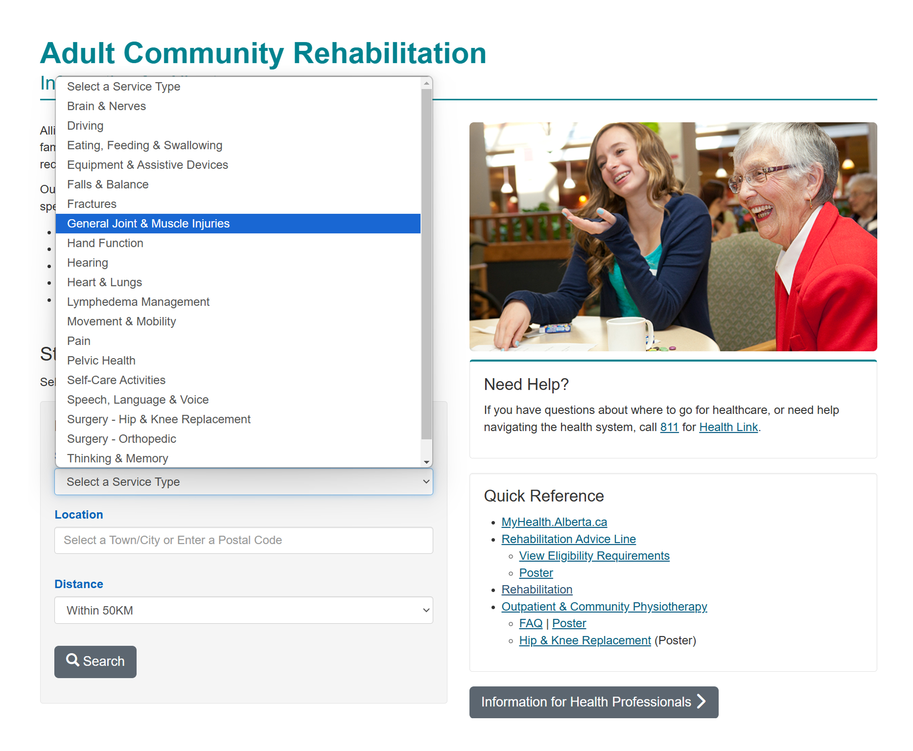
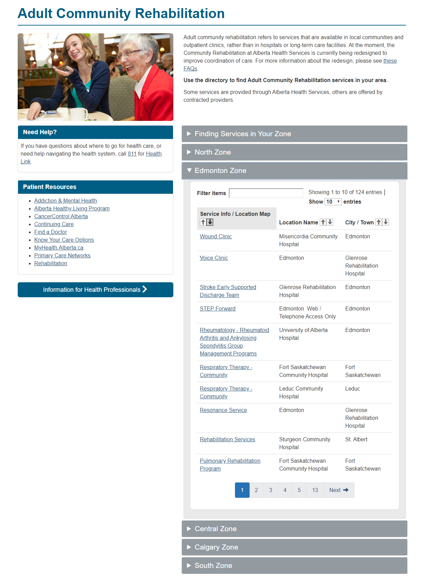
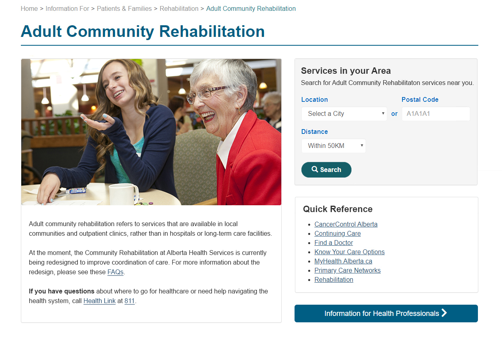

Health service listings
Service functionality upgrade
Summary
Improved the user experience of an existing service search tool by allowing for more specific categories and subcategories.
Background
My role
Co-created an improved health service search tool to benefit specific groups based on geography, service types and sub-types.
Accomplished this by repurposing an existing admin tool to tag and group services that are then consumed through a .JSON feed.
Involved in the ideating and prototyping, and then working with IT teams to bring the ideas to life.
Goal
Improve current service search tool to be more flexible beyond broad clinical topic categories to better reach specific audience segments
Target users
- Public looking for health services
Improvement opportunities
- With minimal IT development, enhance current service search tool to provide more focused results with optional maps and Google directions
- Provide service search tool interface with variable branding and optional maps
- List services that automatically update when they are changed or removed unlike manual tables of services
Screenshots
Before
After
Results and outcomes
Learnings
- I learned that existing tools can be improved greatly by reimagining how they can work.
- When ideas are difficult to imagine and explain, creating mockups can demonstrate to stakeholders and technical teams how things can work.